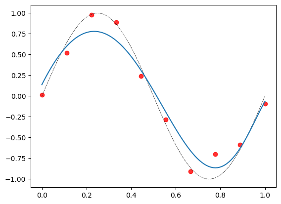

1. MSE2. Overfitting and Underfitting2.1. Toy dataset2.2. Overfitting2.3. Data Augmentation2.4. Underfitting3. Model Complexity4. Regularization4.1. Ridge Regression4.2. LASSO Regression5. Cross Validation5.1. k-Fold cross validation5.2. Leave one out cross validation6. Probabilistic view1. MSEThe label vector y is a random vector with mean XTw and covariance matrix 2I:y=N(XTw,2I)The ML estimator in linear regression is also a random vector:w=(XT)yFor this discussion, let us assume that rank(X)=d, so that:w=(XXT)-1XyThe expected value of the estimator is E[w]=w, which means that this is an unbiased estimator. The MSE of this estimator is given by:E[||w-w||2]=2trace[(XXT)-1]2. Overfitting and Underfitting2.1. Toy datasetConsider a regression problem in which the true relationship is given by:g(x)=sin2x, 0x1The label is a noisy, corrupted version of this function. The noise is an error term that is sampled from a zero mean Gaussian with variance of 0.1:N(0,0.1)The label is therefore:yi| xiN(g(xi),0.1)This is the data-generation part. In reality, we don't know the functional form of g(x). This is a toy dataset meant to aid in visualizing things.Let us look at a dataset of size n=10:D={(x1,y1),,(x10,y10)}We can turn this into a linear regression problem by forming non-linear polynomial features. Let us assume that we settle for a third degree polynomial. The feature vector is:x=a
1
x
x2
x3
X is going to be a dn matrix with d=4 and n=10. d=4 since we are also adding an intercept. The label vector is y. Concretely,X=a
1
1
x1
x10
x21
x210
x31
x310
,y=a
y1
y10
The weight vector is going to be:w=a
w0
w1
w2
w3
Therefore, our model is:a
f(x)
=w0+w1x+w2x2+w3x3
=wTx
Remark: As far as the original problem is concerned, f is a non-linear function of the feature. After adding more (polynomial) features, f is linear in the weights. This is still called a linear regression problem as far the weights are concerned.
We can now learn the optimal weights by minimizing the SSE. We get:w=(XXT)-1XyThe weights we end up with are:w=a
-0.04
9.54
-28.12
18.61
If we plot the function learnt, this is how it looks:It seems like a reasonable fit.2.2. OverfittingWhat if we change p=9. The resulting data-matrix will be of shape dn with d=10,n=10.a
f(x)
=w0+w1x++w9x9
=wTx
w=a
0.02
62.12
-1383.34
13019.05
-63619.93
178687.61
-300179.44
297927.91
-160994.34
36480.26
The model fits the noise in addition to the signal. This problem is termed overfitting. Also note the really high magnitudes for the components of the weight vector. An overfit model is said to be a high variance model: small changes in the dataset can result in wildly different models. For example:Note the boxed region. A small change in the position of one or two data-points caused a big change in the fitted curve.2.3. Data AugmentationIncreasing the data or augmenting it (data-augmentation) is one way of mitigating the problem of overfitting. For n=100, the result is as follows:Data Augmentation is a popular technique for increasing the size of the dataset:RotationTranslateComing back to the regression problem, the weight vector for this model is:w=a
-0.06
10.91
-85.89
609.29
-2557.32
5953.79
-8253.17
6949.81
-3318.79
691.52
Note the relatively smaller values for the weights. Models that are really complex tend to overfit. A high-degree polynomial is one such example.2.4. UnderfittingUnderfitting is the opposite problem of being unable to capture the signal in the data:A line is too simple for the given data and completely misses the patterns. When a model underfits, it is usually a good idea to fit a more complex model.3. Model ComplexityIf the train loss is low and the test loss is high, the model is overfitting. If the train loss is itself high, the model is underfitting. Here is a general plot of train and test loss with respect to model complexity:LossModel complexitytraintestunderfitoverfitNote how the training loss keeps decreasing as the models get more and more complex.4. RegularizationRegularization is a method to mitigate overfitting. We can't always resort to adding more training data. In such situations, we impose an a constraint on the model's weights. We study two forms of regularization:4.1. Ridge RegressionThe loss function is modified as follows. This is called the regularized loss function:L(w)=1
2ni=1(wTxi-yi)2SSE+
2||w||22regularization termwhere:||w||22=w21++w2dThere are two aspects to the regularized loss:data-dependent loss: SSEmodel-dependent loss: regularization termcontrols the complexity of the model||w||2 is the L2 norm of w. This is the usual Euclidean norm. is called the regularization rate and is a hyperparameter.
Hyperparameters versus Parametersparameters are learnt from datahyperparameters are chosen prior to the learninghowever, the best hyperparameter for a given problem is still determined by making use of the (validation) data
For =0.001, this is the resulting model:

The corresponding weight vector:w=a
0.14
5.38
-10.52
-4.02
2.33
4.89
4.44
2.22
-0.81
-4.10
Ridge regression has the effect of pushing the weights nearer to zero though not exactly to zero. Let us see how to solve for w:L(w)=1
2ni=1(wTxi-yi)2SSE+
2||w||22regularization termOn setting the gradient to zero we haveXXTw-Xy+w=0Simplifying:(XXT+I)w=XyTherefore:w=(XXT+I)-1XyGeometric viewThe optimization problem can be equivalently formulated as:
min
w1
2ni=1(wTxi-yi)2SSEsubject to||w||2where is some scalar dependent on . Plotting the contours of the SSE and the constraint region:w1w2wMLwContours of the SSEa
||XTw-y||2
=||XTwML-y||2+c
From the normal equations, we have XXTwML=Xy. Using this, we get:(w-wML)T(XXT)(w-wML)=cQuadratic expression in w.4.2. LASSO RegressionL(w)=1
2ni=1(wTxi-yi)2SSE+||w||1regularization termwhere:||w||1=|w1|++|w|dis the L1 norm. It is also the Manhattan distance of the point w from the origin in Rd. No closed form solution can be found for LASSO regression.w1w2wMLwWith a high probability, the contours of the SSE will hit one of the corners of the square. This results in a sparse solution.LASSO: Least Absolute Shrinkage Selection OperatorLeast: we are solving a minimization problemAbsolute: the L1 norm uses the sum of the absolute valuesShrinkage: the weights are going to become smallerSelection: since some weights go to zero, it acts as a feature selector5. Cross ValidationAs mentioned earlier, is called hyperparameter. It is chosen using a process called cross validation.5.1. k-Fold cross validationFold-1Fold-2Fold-k
AlgorithmFor in [10-4,10-3,,102]For k rounds:* Train on k-1 folds and test on the remaining fold.The size of the training dataset is n
k(k-1)The size of the validation dataset is n
kStore the validation loss* Average the validation losses from the k modelsReturn that gives least average validation loss
5.2. Leave one out cross validation
AlgorithmFor in [10-4,10-3,,102]For n rounds:* Train on n-1 data-points and test on the remaining data-point.The size of the training dataset is n-1The size of the validation dataset is 1Store the validation loss* Average the validation losses from the n modelsReturn that gives least average validation loss
This process of determining the best value of for a given problem is called hyperparameter tuning.6. Probabilistic viewWe have:yN(XTw,2I)PriorwN(0,2I)P(w)=1
22]MAPTo get a point estimate for w, we maximize the posterior. This is called the maximum a posteriori estimate. Taking log for convenience:
max
w-||y-XTw||2
22+-||w||2
22Maximizing this is the same as minimizing the negative of the objective:
min
w||y-XTw||2
22+||w||2
22Multiplying throughout by 2 and setting =2
2, we have:
min
w1
2||y-XTw||2+
2||w||2This is the same as the ridge regression problem. Thus the MAP estimate with a zero mean Gaussian prior is equivalent to the solution to the ridge regression. The inverse relationship between and can be understood as follows:Smaller the value of , tinier the region in which we would like w to lie. Alternatively, higher the value of , the smaller we want the norm of the weights to be.